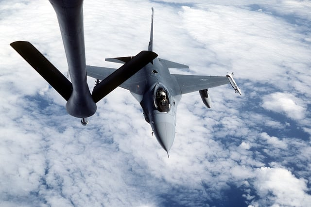

F-16 Aircraft Diagram
The diagram below shows a top-down view of the F-16 Fighting Falcon with its major components labelled. Click on any section of the diagram to navigate to the page that covers that aspect of the aircraft in detail. Each region of the diagram corresponds to a key part of the F-16 that is discussed in depth elsewhere on this site.
Understanding the layout of a combat aircraft like the F-16 helps explain the design decisions that make it exceptional. The large delta wing provides both lift and structural strength. The single engine is positioned centrally to keep the aircraft balanced. The bubble canopy sits high on the fuselage to give the pilot maximum visibility. Every feature of the aircraft is the result of deliberate choices made to optimise performance in combat. Click the regions below to learn more.

Interactive F-16 diagram — click any region to learn more.
Top-left = Radar & Avionics | Centre-top = Cockpit |
Left wing = History | Right wing = Variants | Fuselage top = Combat History
← Back to Home